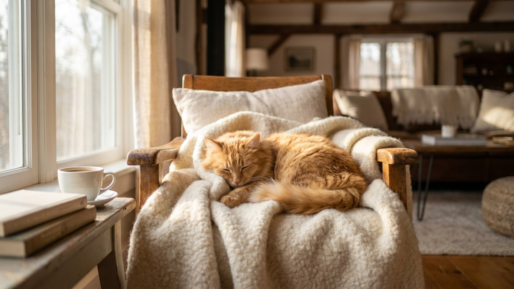

Достали переноску — питомец исчез под кроватью. Упаковали с боем — кричит всю дорогу. Знакомо? Проблема не в характере животного, а в том, что переноска появляется раз в год и каждый раз сигнализирует: «сейчас будет что-то неприятное». Это связка, которую можно разорвать за 2 недели — без принуждения и без стресса.
🐾 Спросите AI-ветеринара прямо сейчас
AnimaLife — приложение, где AI-ветеринар отвечает на вопросы о кошке или собаке 24/7. Бесплатно, без записи и очередей.
Животные не боятся предметов — они боятся того, что с ними связано. Переноска появляется раз в год, сопровождается суетой хозяина и ведёт к машине, ветеринарной клинике или другому стрессовому месту. Мозг животного делает вывод: коробка = неприятное. И в следующий раз реакция включается ещё до того, как переноску успели открыть.
У кошек этот рефлекс особенно устойчивый: они тонко считывают изменения в поведении хозяина, запах тревоги и нарушение привычного порядка. Собаки чуть легче переключаются, но и у них связка «переноска = плохо» формируется быстро, если её не разрушить заранее.
Это не шутка и не метафора. Переноска должна стоять в доступном месте с открытой дверцей круглый год — как обычный предмет мебели. Внутри — знакомый плед или футболка с вашим запахом, иногда лакомство.
Задача этого этапа — сделать переноску нейтральной. Когда питомец начинает заходить туда добровольно, можно переходить к следующему шагу.
Схема работает для кошек и собак. Темп индивидуальный — не торопите. Если питомец «завис» на одном этапе дольше недели, это нормально: просто продолжайте, не форсируйте.
Когда приходит время реальной поездки, несколько вещей помогут сохранить спокойствие.
Переноска, к которой приучили заранее, превращается из источника паники в знакомое укрытие. Это меняет всю поездку — и для питомца, и для вас.
Материал носит информационный характер и не заменяет очную консультацию ветеринара.
🐾 Дневник здоровья питомца — в кармане
Вес, прививки, симптомы и напоминания в одном приложении. AnimaLife следит за здоровьем питомца вместо вас.
🐾 Понравился разбор?
Подпишитесь на канал — каждый день разбираем по одному тревожному симптому у кошек и собак: что в пределах нормы, а когда пора к врачу. Подпишитесь, чтобы не пропустить разбор, который может спасти здоровье вашего питомца.